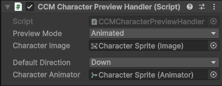

Character Preview
A character preview shows a live view of the character in the Character Creation Menu.
Whenever a layer of the character is modified, the preview is updated automatically.
Character Preview Controller
If using the Animated Preview Mode, an Animator Controller is required.
This controller has specific guidelines that must be followed.
Read More → Character Preview Controller
Character Preview Setup
- Fastest Setup > Use the Pre-Setup Prefabs
- Custom Setup > Follow the Manual Setup
Regardless of the setup method. The preview Mode must be configured.
Preview Mode
The Character Preview supports two display modes:
| Mode | Description |
|---|---|
| Static | Displays a single sprite |
| Animated | Uses an Animator Controller to animate the character |
Static
- Uses the Preview Sprite from the Layered Character Type > Character Creator Settings.
- No Animator Controller required.
Animated
- Requires an Animator Controller
- Assigned in the Layered Character Type > Character Creator Settings
Tip
Animator Controller setup and requirements are explained here:
Character Preview Controller
Prefabs
Prefabs offer easy implementation of character previews without the need to set them up yourself.
Location: Prefabs > Character Creator > Modules > Character Preview.
Pre-Setup Prefabs
Located in the Pre-Setup subfolder.
These prefabs are fully configured and ready to use.
- Character Preview - Shows a preview of the character with no other controls.
- Character Preview [+Rotation Controls] - Includes buttons on the left and right to rotate the character.
- Character Preview [+Rotation Controls, Anim Buttons] - Includes rotation controls and buttons at the bottom to switch the animation the character is playing.
Drag and drop any of these prefabs into your menu, enter Play Mode and you'll have a functioning Character Preview.

Animation Controls Prefabs
Located in the Animation Conrols subfolder.
These are the same animation controls used in the full pre-setup prefab, provided separately for custom setups.
Four variations are provided, each in their own folder.
Variations contain different sprites but do not change any functionality.
Within each variation folder are two prefabs:
- Animation Button - A single animation button, not functional on its own.
- Animation Controls [Initialize Existing] - A complete setup using the
CCM Animation Switchercomponent.
Setup
- Add the prefab to your scene.
- Assign the Character Preview Handler to the
CCM Animation Switcher. - Buttons will initialize automatically at runtime.
Manual Setup
Want to create a Character Preview from scratch? Here's how to do that.
Step 1️⃣ Create Preview Object
- Create a new GameObject.
- Add the CCM Character Preview Handler component
This is the component responsible for initializing and updating your character preview.

Step 2️⃣ Select Preview Mode
Choose how the preview is displayed:
The Preview Mode determines how the character preview is displayed.
- Static
- Uses the Character Preview Sprite assigned in the Character Creator Settings section of the Layered Character Type.
- Animated
- Uses the Character Preview Controller assigned in the Character Creator Settings section of the Layered Character Type to animate the character preview.
If Animated is selected:
- Assign the Character Animator (Animator component).
- The Preview Controller will be assigned to this Animator at runtime.
Step 3️⃣ Assign Character Image
Assign the Character Image. This is the Image component that the Character Shader will be applied to.
Now once you enter Play Mode, you'll see the character displayed in the preview you just created.
Adding Rotation Controls
Rotation Controls allow the player to change the characters facing direction.
Setup
- Create a new GameObject.
- Add the Unity
Buttoncomponent. - Assign the Buttons On Click event to the
CCMCharacterPreviewHandlercomponent and call theRotateCharacterPreview()method. - The
RotateCharacterPreview()requires a bool, disabled = rotate left, enabled = rotate right.
Follow these steps twice to create two buttons, one for rotating left, the other for rotating right.
Adding Animation Controls
Animation Controls allow for switching between animations at runtime.
Note
Requires Animated Preview Mode.
- Create a new GameObject.
- Add the
CCM Animation Switchercomponent to the GameObject - Set Animation Button Parent. This is the parent GameObject for your Animation Buttons (Can be the same GameObject)
- Set the Initialization Mode.
- Initialize Existing: Will find pre-created animation buttons within the Animation Button Parent
- Auto Create: Will instantiate new Animation Buttons as children of the Animation Button Parent. Uses the Animation Button Prefab you assign.
- Assign
Character Preview Handlerreference. This is used to change the currently playing animation on the Character Preview.
Animation Button Prefab
If the CCM Animation Switcher is set to Auto Create, it requires a reference to an Animation Button prefab.
Use pre-existing Animation Button prefab:
- Inside the Animation Controls prefab folder is an Animation Button prefab. That can be assigned directly to the
CCM Animation Switcher.
Create your own Animation Button Prefab:
- Create a new GameObject.
- Add the
CCM Animation Preview Button Handlercomponent. - Add the Unity
Togglecomponent. - Assign the
Toggleto theCCM Animation Preview Button Handlercomponent. - Add two children GameObjects, name one "Highlight" and the other "Text".
- Add an Image component to the Highligtht GameObject and assign the sprite you want the button to show when it's selected.
- Assign the
Imagecomponent to theGraphicfield on theToggle. - Add the
TextMeshPro - Textcomponent to the Text GameObject. - Assign the
TextMeshPro - Textcomponent to theTextfield on theCCM Animation Preview Button Handler.
Drag and drop the parent GameObject into the Project window to turn it into a prefab.
You can now assign your new prefab directly to the CCM Animation Switcher.
Define Preview Animations
Animation buttons are generated based on the Character Preview Animation Options list.
Location
Layered Character Type > Character Creator Settings
Each Entry Contains
- Animation Name - The name used to find the animation in the Animator Controller.
- Display Name - The text shown on the button.
At runtime:
- One button is created per entry.
- Pressing a button plays the corresponding animation.